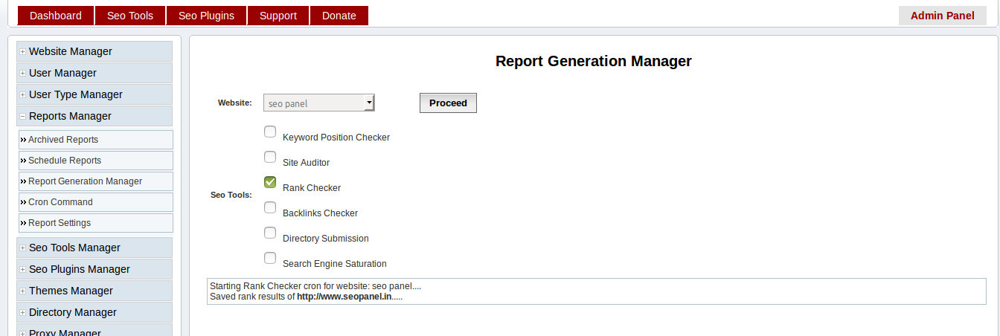
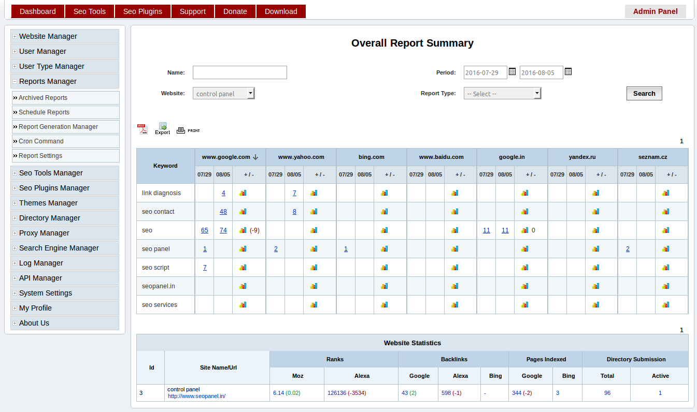

Reports Management¶
Report Settings¶
Next step is to configure seo panel reports
Go to Admin Panel => Reports Manager => Report Settings
Enter details as following screen shot

- Delay between each spider crawl(seconds) - The delay between each crawling in your seo panel(Default value is 5 seconds)
- Allow user to generate reports - Allow users to generate reports or not(Default value is No)
- User agent - User agent used while crawling a page in seo panel
- Allow users to schedule report - Allow users to edit their report generation settings(Default value is Yes)
- System report generation interval - Seo panel report generation interval. We can set it as Daily, 2 days, Weekly and Monthly(Default value is Daily)
- Enable report email notification - Enable this feature to send reports in email
- Number of keywords needs to be checked in each cron execution - The number of keywords used in reports generation for each cron job execution(default value is 1). For efficient report generation keep it as 1
Cron Command¶
Cron job is the best method to generate reports effectively with out failures.
Go to Admin Panel => Reports Manager => Cron Command
Add following command to your cron tab
*/15 * * * * php /opt/lampp/htdocs/seopanel/cron.php

Check following tutorials to setup cron job in different environments
Setup cron job in cpanel
https://www.siteground.com/tutorials/cpanel/cron_jobs.htm
Setup cron job in plesk
Setup cron job in linux
Setup cron job in windows
Schedule Reports¶
You can also schedule reports for different users
Go to Admin Panel => Reports Manager => Schedule Reports
Enter details as following screen shot

- User - Select corresponding user to schedule reports
- Next report generation time - Next report generation date
- Reports generation interval - User report generation interval. We can set it as Daily, 2 days, Weekly and Monthly(Default value is Daily)
- Email notification - Enable this feature to send reports in user email
Report Generation Manager¶
We did not recommend to use this feature, as it may add captcha to search engine results. We plan to deprecate this feature in new releases.
Go to Admin Panel => Reports Manager => Report Generation Manager
Enter details as following screen shot
- Website - Select the required website for report generation
- Seo Tools - Choose required seo tool from the list
Archived Reports¶
Here you can see overall reports of websites added in seo panel.
Go to Admin Panel => Reports Manager => Archived Reports
Enter search filter value according to your requirements.
Filters
Name - Enter required keyword filter the reports
Period - Enter date interval to filter the reports
Website - Choose required website to filter the results
Report Type - You can select different reports types
- Keyword Position Summary - Select to get keyword reports only
- Website Statistics - Select to get website reports only
You can also choose following to download and print reports in different formats
- PDF - Click on PDF icon to download reports in PDF format
- Export - Click on Export Icon to download reports in .csv format
- Print - Click on Print Icon to print te reports